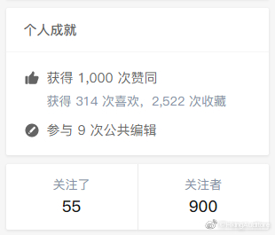

搞算法的人就是神

HkingAuditore
2021-06-30
HkingAuditore
2021-06-30
抄得👴🏻 手断了
都没抄完
都没抄完
HkingAuditore
2021-06-30
今天一些感动的事情
今天收到了一个很意外的评价，比如可以出现在其他人类的毕业致谢里。我觉得我也可以设想一下到时候毕业致谢里写谁了。
其实还蛮多的。
致谢的范围挺大的狸，解决问题是，一起谈心是，带饭也是，有时候心情不好能说上两句鼓励的话都能算是人间之光。 好像只要不是把我当工具人的人类的我都很喜欢。
好像只要不是把我当工具人的人类的我都很喜欢。
往远的说，摸鱼群里的群友经常会敲打我，但是我能走到今天这一步完全离不开他们，是可以致谢的程度。IGG的g星把我从信管捞到了游戏开发，也是可以致谢的程度。糖果灾难，菜鸟厨房，二维公民，深空...还有好多
嗐，我觉得致谢名单很长也是一件很幸福的事情。
就简单到那种“我喜欢你，你也喜欢我的”的关系，有时候看起来很多，有时候看起来又很少。所以致谢名单还可能是个动态数组，完全取决于心情。
但是我感觉总有几个名额是永远在前面不会变的。虽然很少，但是一定有。
好像现在收获真诚的谢谢是个奢侈的事情，“那个人无缘无故帮我，到底是为了什么啊”。就像在游戏里施舍给npc的一瓶药，明明只是一段代码，但是又有一种克制不住的冲动。
可能“谢谢”给人的感觉是
“他把我当成了一个好人。”
确实是很奇妙的感觉。
（纪念一下逼乎终于900粉1000赞
今天收到了一个很意外的评价，比如可以出现在其他人类的毕业致谢里。我觉得我也可以设想一下到时候毕业致谢里写谁了。
其实还蛮多的。
致谢的范围挺大的狸，解决问题是，一起谈心是，带饭也是，有时候心情不好能说上两句鼓励的话都能算是人间之光。
往远的说，摸鱼群里的群友经常会敲打我，但是我能走到今天这一步完全离不开他们，是可以致谢的程度。IGG的g星把我从信管捞到了游戏开发，也是可以致谢的程度。糖果灾难，菜鸟厨房，二维公民，深空...还有好多
就简单到那种“我喜欢你，你也喜欢我的”的关系，有时候看起来很多，有时候看起来又很少。所以致谢名单还可能是个动态数组，完全取决于心情。
但是我感觉总有几个名额是永远在前面不会变的。虽然很少，但是一定有。
好像现在收获真诚的谢谢是个奢侈的事情，“那个人无缘无故帮我，到底是为了什么啊”。就像在游戏里施舍给npc的一瓶药，明明只是一段代码，但是又有一种克制不住的冲动。
可能“谢谢”给人的感觉是
“他把我当成了一个好人。”
确实是很奇妙的感觉。
（纪念一下逼乎终于900粉1000赞
- 